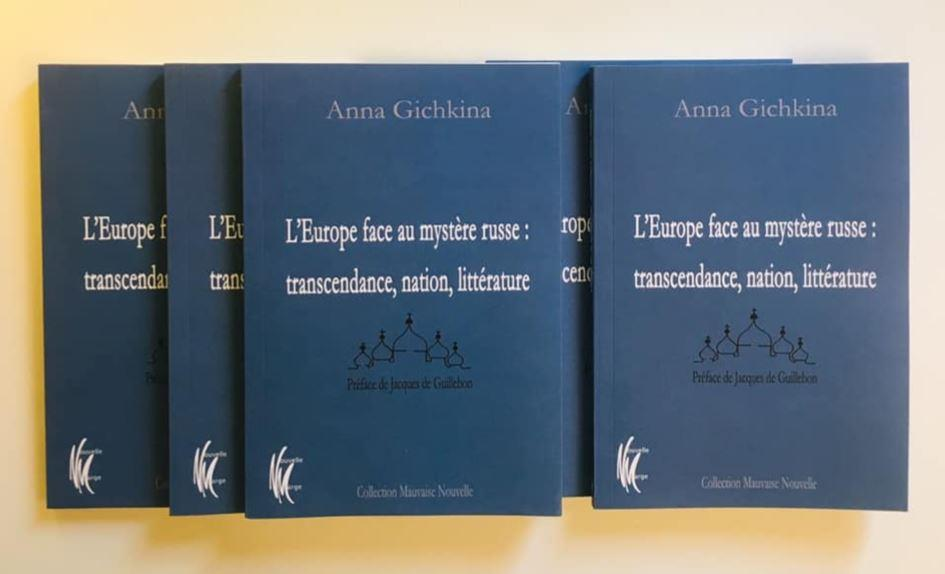
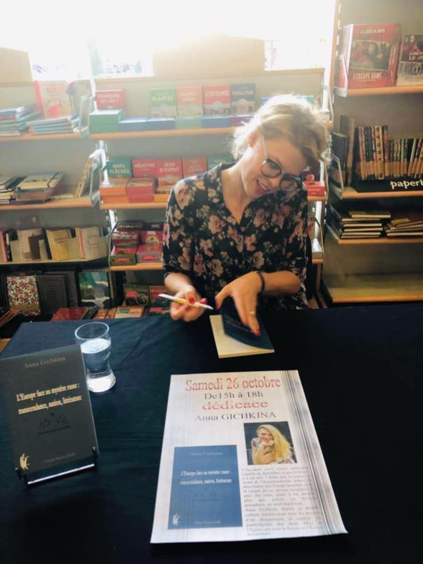
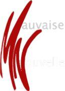

Revenir à l’essence des choses. Recouvrer un conservatisme autorisant le refleurissement du bon sens qu’offrent la simplicité et le principe de réalité. Accepter sa propre identité, aimer ce que l’on est profondément, mentionner fièrement son passé constitué de hauts et de bas, s’enraciner dans son orthodoxie, voilà ce que la Russie assume hardiment aujourd’hui contre vents et marées.
C’est une voie que l’Occident pourrait utiliser pour se relever, se réapproprier sa culture, son catholicisme, quitter son anomie, regagner en épaisseur et renouer avec ce qu’il est fondamentalement. Telle est la proposition originale d’Anna Gichkina : un retour aux sources, par la culture, et la littérature spécifiquement. Elle publie aux Éditions Nouvelle Marge L’Europe face au mystère russe : transcendance, nation, littérature. L’auteur affirme que la littérature russe elle-même, en ce qu’elle puise profondément dans les Évangiles du Christ, « est appelée à contribuer au rétablissement en Occident des valeurs chrétiennes devenues vulnérables et à embellir les âmes des peuples d’Europe. »
Tout au long de l’ouvrage, la démonstration est intelligente, assurée et limpide, guidée par la force spirituelle de l’auteur. Anna Gichkina affirme sans ambages que, confrontée aux attaques progressistes du monde globalisé, « La Russie ne tombera jamais. Elle sera toujours fidèle à son orthodoxie et à son Histoire. Donc elle sera toujours. » Imiter la Russie comme un modèle peut constituer aux yeux de l’auteur une solution pour les pays d’une Europe bien malade à force de renier son identité, son passé, ses racines.
Elle rappelle à dessein un précédent historique : « La guérison de la France par l’esprit orthodoxe russe a été entreprise à la fin du XIXème siècle. Abattue par la défaite de 1871, étouffée par le naturalisme dans la littérature, fatiguée du scientisme, de la passivité du catholicisme et du désespoir schopenhauerien, la France ressent à l’époque un besoin vital d’air nouveau, d’espoir. Cet air nouveau, remède à la crise aussi bien spirituelle que politique, a été ramené de Russie par Eugène-Melchior de Vogüé qui a fait découvrir aux Français le génie littéraire russe et avec l’orthodoxie russe qu’il appelait « l’infusion du sang nouveau » ce dont la France avait tant besoin pour vivre. La propagande russe mise en place à l’époque en France a eu pour conséquence l’Union franco-russe, laquelle a stabilisé et renforcé la politique internationale de la France. » Avec Vogüé, nous nous trouvons plongés au cœur du XIXème siècle, âge d’or de la littérature russe animée par Pouchkine, Gogol, Dostoïevski, Tolstoï et bien d’autres. Dans son Journal, en août 1877, le prophète Dostoïevski exprimait sa foi en la Russie : « Qui croit en la Russie sait qu’elle se tirera de tout, absolument de tout, dût-elle changer jusqu’à son aspect extérieur. »
Le ton d’Anna Gichkina a des accents de discours d’Harvard. Fille de Soljenitsyne (que curieusement elle ne mentionne pas), elle propose donc ce remède miracle aux maux de l’Occident : l’imitation de la Russie. Comme jadis on imitait Jésus-Christ. Quand on croyait à Dieu et à Diable. Et l’on comprend mieux l’ostracisme que subit son pays de la part des nations libérales mondialisées qui se montrent si dédaigneuses à son endroit. Fascinées par le Dieu du Progrès, ces nations méprisent les valeurs millénaires de la terre, de l’enracinement, de la foi en la vérité, de la transcendance, toutes incarnées par ce puissant pays qui résiste encore et encore tel un petit village gaulois, pardon, tel un petit village russe orthodoxe, esquif courageux balloté dans l’immensité liquide et insipide du monde marchand. Scandalisées que cette slave contestation s’érige en rempart face à leur doxa éclairée, les forces libérales libertaires des sphères politiques et médiatiques occidentales se sont fixées comme but d’éradiquer ce qu’elles considèrent comme une inacceptable poche de résistance. Elles ridiculisent donc à l’envi la Russie à longueur de reportages instruits à charge contre elle. Elles caricaturent ce grand dirigeant qu’est Vladimir Poutine. Lui qui ferait probablement des merveilles à la tête de n’importe quel pays occidental, qui saurait faire communier cet Occident à sa vocation originelle et le protégerait des nombreuses attaques extérieures : immigrations incontrôlées, communautarisme, perte des valeurs spirituelles qui font l’âme des peuples.
L’Europe rejette le christianisme issu du monde antique. Rome et Athènes ne sont plus ces phares référents parce que l’orgueil moderne rejette toute mention au passé. L’élite progressiste ayant remplacé l’élite catholique qui avait bâti et maintenu notre civilisation prône de nouvelles valeurs et une éthique iconoclaste qui s’affranchit des notions de bien et de mal. Qui donne la part belle aux inventions du mensonge, aux insensés de LGBT et même de LGBT-X désormais, le X correspondant à la catégorie « tout autre sorte de genre » ! Sur les thèmes de la vérité et du bien, il est stupéfiant d’entendre le président du Conseil Consultatif National d’Éthique chargé de superviser la révision des lois bioéthiques, le professeur Jean-François Delfraissy, déclarer le plus sérieusement du monde que la question relative au bien et au mal lui est étrangère.
Provocation invraisemblable au regard de la fonction occupée et glaçantes perspectives d’avenir quand on voit que ce docte médecin renchérit et estime que les ruptures anthropologiques de la Chine (qui n’a aucune restriction en matière de recherche sur les embryons) « sont un modèle qu’il faudrait suivre ». Anna Gichkina affirme à juste titre et à rebours de tous ces zozos farfelus et délirants qui jouent aux apprentis sorciers, que « L’Europe a besoin d’une nouvelle élite respectant l’héritage traditionnel moral et culturel de leurs pères ainsi que les solides bases spirituelles de la civilisation européenne. » Elle poursuit : « Les sociétés, les peuples, les pays ne peuvent pas exister sans le minimum de solidarité unissant les hommes. La tradition chrétienne, source de l’amour et de la liberté, est incontestablement en amont de cette solidarité. » Elle pousse plus avant la démonstration : c’est parce que l’orthodoxie est reconnue comme prééminente en Russie par les communautés juive ou musulmane qui y vivent paisiblement, mais aussi parce que Poutine et le Patriarche réaffirment sans cesse cette primauté, que la Russie est un pays qui, sans rougir, peut reprendre à son compte la fameuse sentence de Péguy : « La République une et indivisible, notre royaume. » Impossible de dire la même chose pour la France en voie d’archipélisation parce qu’elle a piétiné son identité chrétienne et pensé à tort que le muticulturalisme conduirait à la félicité.
Le remplacement du christianisme par la religion de l’humanisme (ou des droits de l’homme) s’opère à grande vitesse. Laissons l’auteur nous expliquer de façon concise la chronologie des événements : « Aujourd’hui, nous observons une étape cruciale de l’Histoire de la civilisation européenne -la mort de Dieu. Nietzsche a commencé à en sonner les cloches au XIXème siècle. Les humeurs antichrétiennes prônant l’élévation de l’homme au-dessus de tout prennent leurs sources à l’époque de la Renaissance. C’est à cette période de retour du paganisme que commence le combat acharné contre le christianisme. Plus tard, le siècle des Lumières prend le relais. Au XIXème siècle, c’est le darwinisme qui continue le combat engagé par ses prédécesseurs. "A la place de la religion chrétienne vient la religion de la science.", constataient les intellectuels de l’époque. Après la Seconde Guerre mondiale surgit le phénomène des Droits de l’Homme faisant de nous des êtres libres de toute religion. »
Le génie du christianisme réside en réalité dans le fait de laisser l’homme à sa juste place ; place sacrée si l’on admet que celui-ci est conçu à l’image de Dieu ; place inférieure à celle de Dieu qui permet à l’homme de reconnaître humblement son propre mystère et sa faiblesse. Ce faisant, il redevient grand face à son Créateur et aimable à ses semblables. Il ne faudrait donc pas que le transhumanisme et l’illusion de la vie illimitée nous fassent perdre l’homme authentique : « L’homme qui fait des enfants, enterre ses morts, fait reposer ses espoirs sur l’Éternité, souffre de la perte de ses proches et de la vieillesse, éprouve pitié et compassion pour les autres, aime ses amis, etc. »
La Russie a vraisemblablement la capacité d’indiquer le cap d’une résurrection.
R.A.
Retrouvez les chroniques de Rodolphe ARFEUIL
dit raouldebourges sur
http://www.mauvaisenouvelle.fr
Pour commander l’ouvrage de notre amie Anna Gichkina :
L'Europe face au mystère russe : transcendance, nation, littérature
Partager cette page